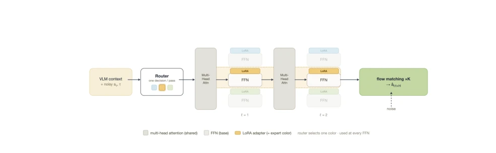
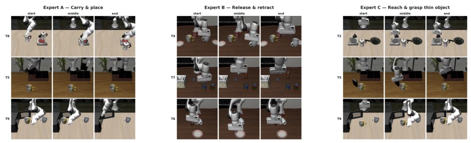
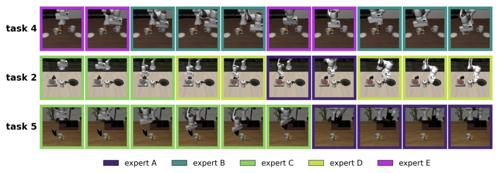
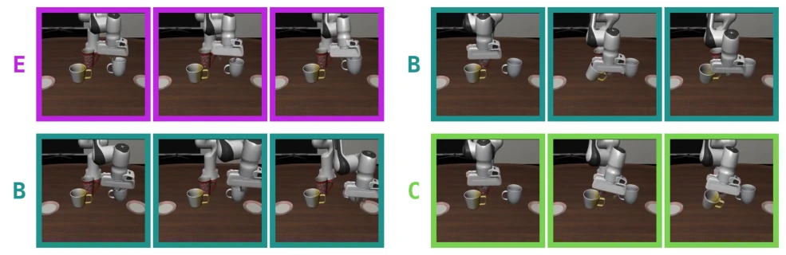

实验在 LIBERO-10 基准上进行，对比 MoE 策略与微调后的单体基线 (π0 和 SmolVLA)。结果显示，MoE 在任务性能上与基线相当，但专家表现出有意义的专业化。定性分析发现，专家对应不同的技能阶段，如专家 A 负责搬运，专家 B 负责释放，且跨任务复用。定量分析区分了可复用专家 (跨任务高频) 和任务特定专家 (仅特定任务高频)。手动路由实验表明，即使路由器未选择某专家，其技能在特定上下文中仍有效，证明了原子的可组合性。然而，部分专家行为仍与任务强相关，且 6/16 专家未被使用，说明模型自动丢弃了多余容量。失败案例也显示出可解释的重复应用模式而非退化行为。
—
其他图片Other Figures

Figure 1. LoRA Mixture-of-Experts architecture. The router makes a single decision per forward pass from the VLM context (plus the noised action chunk aτ and flow-matching timestep τ), selecting one expert that is applied at every action-expert layer. Multi-head attention is shared across experts; only the FFN sublayer is replaced by a base FFN plus a routed LoRA adapter. The same expert (color) is used at every FFN, and the action chunk ˆat:t+H is produced through K flow-matching steps.

Figure 2. Qualitative comparison of three learned experts on LIBERO-10 rollouts. Each column shows start, middle, and end frames of trajectories where the corresponding expert was selected by the router.

Figure 3. Example trajectories labeled by top expert used at each step. Different skills are composed in order to perform a more complicated, longer horizon task. In task 4, repetition of skills allows for recovery-like behavior.

Figure 5. Manual router substitution for two action chunks. In both left and right chunks, expert B navigates away from the mug, whereas experts C/E grasp the mug.